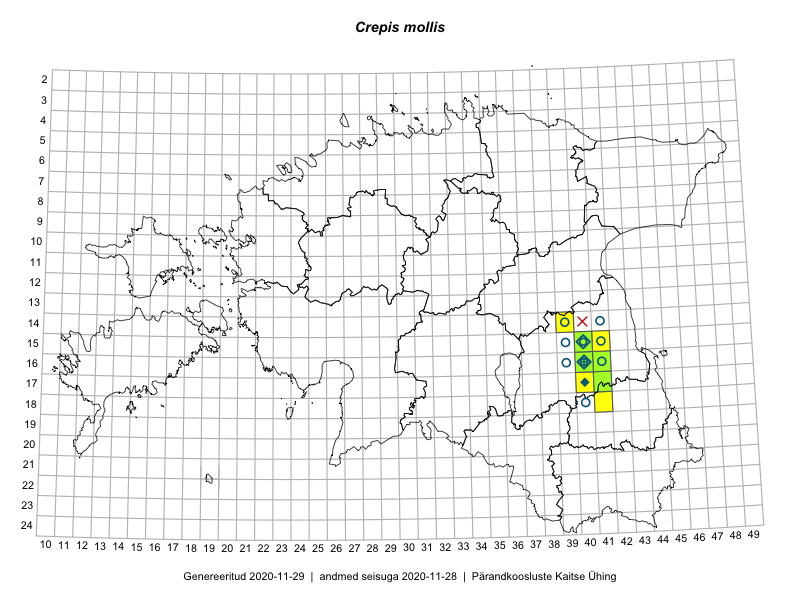

Crepis mollis
Uuendatud: 2016-12-02
Kaardile koondatud taksonid: Crepis mollis (Jacq.) Asch.

Kaart põhineb 9 kirjel, neist vaatlusi 7 ja eksemplare 2. Taksonit on leitud 3 ruudust.
Viited andmebaasikirjetele
- Thea Kull: 2015-07-07: 16-40: ala
- Thea Kull: 2015-07-07: 16-40: GPS punkt
- Peedu Saar, Thea Kull: 2015-06-19: 18-41: GPS punkt
- Peedu Saar, Thea Kull: 2015-06-19: 18-41: GPS punkt
- Thea Kull: 2015-07-30: 16-40: GPS punkt
- Thea Kull, Peedu Saar: 2015-06-19: 17-41: ala
- Maret Gerz, Ott Luuk: 2014-06-25: 16-40: ala
- Peedu Saar, Thea Kull: 2015-06-19: 17-41: GPS punkt
- Thea Kull: 2015-07-27: 16-40: GPS punkt